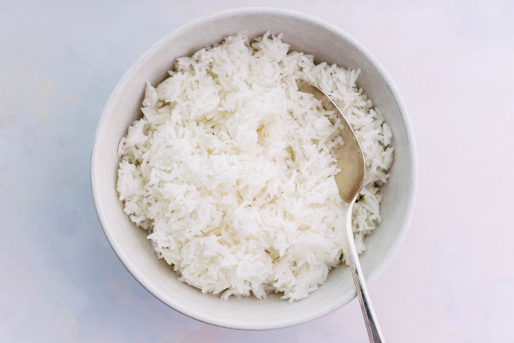

Scrambled Eggs

Description
Learn to make fluffy white rice!
Makes 3 cups of rice.
Ingredients
- 1 Cup (200g) of white rice (medium or long grain)
- 1.5 cups (375 mL) of water
Instructions
- (Optional) Rinse the rice under cold running water to remove excess starch, dirt and debris
- Place 1 cup (200g) of white rice and 1.5 cups (375 mL) of water into a large saucepan over medium-high heat.
- Once a gentle boil is reached, turn the heat down to low and cover with a lid. Let simmer untouched for 12-14 minutes.
- Keeping the lod on, tilt the saucepan to check if any unabsorbed water remains. If there is still loose water, let it cook for another 1-2 minutes and check again.
- Once all of the water has been absorbed, remove the rice from the heat and let rest with the lid on for 10 minutes.
- Remove the lid, and fluff gently with a fork. Serve warm.